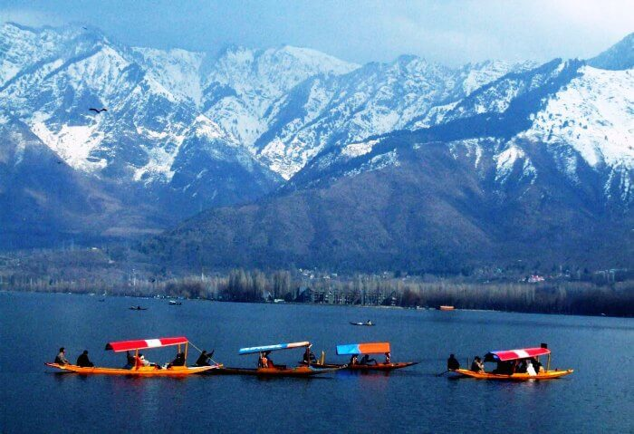
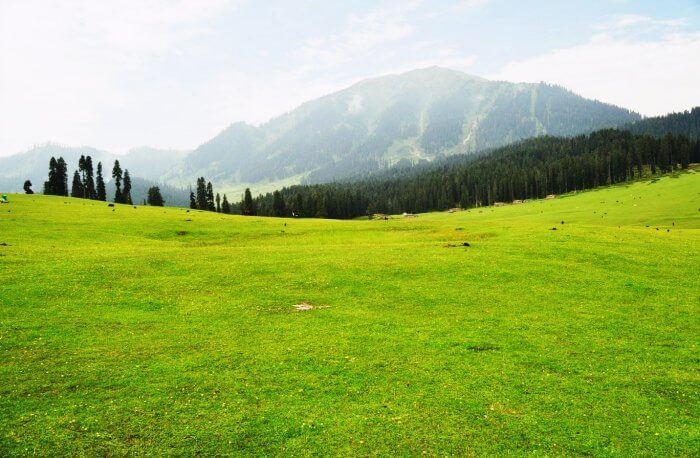
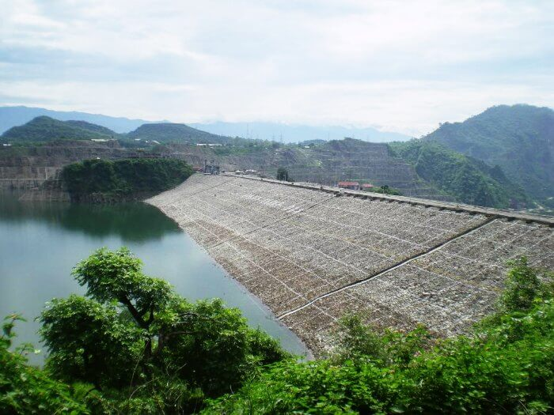
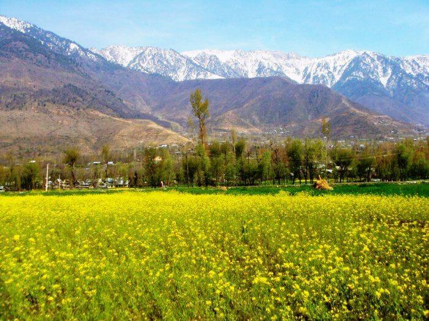

| VISITING PLACES |
| Name |
Origin |
Photo |
| KASHMIR : At its best
| KASHMIR
|  |
| Srinagar is undoubtedly one of the most beautiful places to visit in Kashmir as well as in India. From boating to trekking, bird watching to water skiing, Srinagar place has it all.
Best time to visit: June to October, and for snow December & January would be the best
Things to do: Stay in the boat house! |
By Nature |
Place 1 |
| GULMARG: For An Adventurous Journey, Adventure Enthusiasts Haven, Skier’s paradise
| KASHMIR
|  |
| Famously known as the ‘Meadow of Flowers’, Gulmarg is a treat to the eyes with its spread of vibrant flowers against snow capped mountains as backgrounds.
Best time to visit: June to October, and for snow December & January would be the best.Things to do: Mountain Biking, trekking, Skiing if you visit in winters and Gondola rides for a panoramic view of the valley. |
By Nature |
Place 2 |
| SONMARG: The Expanse Of Exemplary Beauty
|
|  |
| Sonamarg, as the name suggests, is famous as the ‘Meadow of Gold’. An endless stream of stunning flowers and undulated trekking routes are its attractions. Sonamarg has to be in every visitors’ list of places to visit in Kashmir for its mesmerizing aura and breathtaking views.
Best time to visit: June through October, December & January for snow.Things to do: Trekking, Camping and nature walks |
By Nature |
Place 3 |
| LEH: The Land of Pure Adventure
| KASHMIR
|  |
| Leh is one of the best places to visit in Kashmir in summers. The lofty mountains, the alpine lakes, and the quaint settings enable Leh one of the best places to visit. This place is every biker’s dreamland. Clad in the beauty and love of nature, Leh offers breathtaking views, leaving no visitor disappointed.
Best time to visit: April to June, September to October. Most of the tracks are closed after November due to heavy snowfalls.Things to do: Trekking and Mountain Biking is all it takes to give you a lifetime worth memories |
By Nature |
Place 4 |
| KUPWARA: The Crown of Kashmir
| KASHMIR
|  |
| The thriving meadows, alpine mountains, and the gushing clear water make Kupwara a must visit destination in Kashmir. This city epitomizes the beauty of Kashmir.
Best time to visit: April to October.Things to do: Visit to Lolab valley, Qamar Reshi Sahib Shrine, Sheikh Baba Behram |
By Nature |
Place 5 |
| KATHUA: The city of Sufis
| KASHMIR
|  |
| For the history lovers willing to have a glimpse of Kashmir’s past, Kathua should be on your list of places to visit in Kashmir. Situated on the banks of a river, Kathua offers scintillating views and serene atmosphere.
Best time to visit: Summer is the best time to visit Kathua.Things to do: Jasrota fort is a must visit for history lovers. Picnicking in Ujh Barrage |
By Nature |
Place 6 |
| KARGIL: The unforgettable City
| KASHMIR
|  |
| The city whose name brings shivers to Indian Citizens is a definite visit to everyone. Not only does this city bring heart-touching memories but also provides scintillating views. The atmosphere in this city oozes with emotions.
Best time to visit: March to June.Things to do: Mountaineering in the Nun Mountains, trekking to Suru Valley. Visits to Mulbek Gompa, Shergol, Urgyan Dzong and Wakha Rgyal |
By Nature |
Place 7 |
| PULWAMA: The city of color burst
| KASHMIR
|  |
| This multihued city offers amiable weather, pleasant odor saffron fields, malleable citizens. One cannot have enough of the saffron fields and the rich culture in Pulwama.
Best time to visit: April to October.Things to do: Mountaineering and trekking in summers and skiing and snowboarding in winters |
By Nature |
Place 8 |
| HEMIS: The Region Of Rarity
| KASHMIR
|  |
| An unexplored destinations, Hemis is a small village is known for its monastery and national park. It is a must visit in Kashmir in summers if you are a wildlife enthusiast. Rare species like the snow leopard and bharals find shelter in the national park here.
Best time to Visit: May to July.Things to do: Visit the Hemis Monastery and the Hemis National Park |
By Nature |
Place 9 |
| PAHALGAM: Freshness Overload!
| KASHMIR
|  |
| Tranquility and serenity are the other names of Phalagam! This tiny town is known to suck out all the stress of every visitor. This hilly region is famous for its coniferous forests.
Best time to visit: June to October, December & January for snow.Things to do: Visit to Betab and Aru Valleys, Horseback riding, canoeing |
By Nature |
Place 10 |